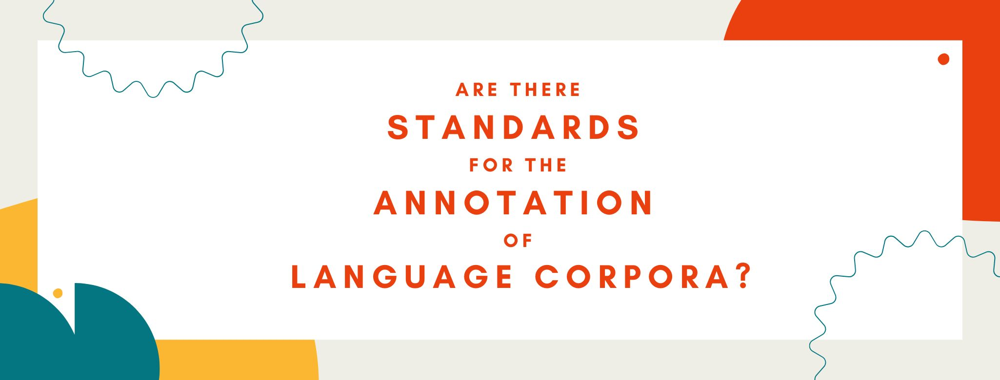

Blog
Are there standards for the annotation of language corpora?
Tags: corpora, language, annotation

Some weeks ago, I attended a conference where several of the presenters discussed language corpora they had created as part of different research projects. During the Q&A turn of the last presenter, an award-winning researcher and creator of various corpora, one of the attendees raised their hand and asked: “I have attended five talks today discussing language corpora and each corpus employed different annotation schemes. Wouldn’t it be convenient to have a set of standards for corpus annotation that everyone could use?”
The question posed by this attendee made sense: if we have many language corpora but these use different formats and annotation schemes, the data are not reusable. For example, we can’t merge data from various corpora to answer important questions, nor can we train NLP tools without having to change the format of each individual corpus, something that would be costly and time-consuming.
However, the truth is that annotation standards for language corpora already exist, but many language researchers are completely unaware of this. The need for annotation standards arose with the boom of the Digital Humanities, when researchers started to work with digital texts. They soon realized that their data would be useless if each research group followed their own format and internal guidelines.
In the 1980s, a group of people met and founded the Text Encoding Initiative (known as TEI), which presented a set of guidelines or standards for encoding electronic texts and for adding meta-data. TEI guidelines were first based on SGML (Standard Generalized Markup Language) and then moved on to use XML (eXtensible Markup Language). In any case, both SGML and XML are markup languages. Markup languages are computer languages which use keywords and tags to define elements inside a document. If you’re familiar with web development, HTML is also a markup language.

Basically, markup languages don’t “do anything” other than adding meta-data to a document. As an example, check the text below, which uses XML: the tags you see are simply there to encode some information that can be read by other humans.
<p xmlns="http://www.tei-c.org/ns/1.0">Letters from the front usually reached our town on Saturday nights. The "foreign mail" had become a feature of life in Kansas and Nebraska. The letters came in bunches; if one mother heard from her son, so did half a dozen others. One could hear them chatting to each other about what Vernon thought of Bordeaux, or what Roy had to say about the farming country along the Oise, or how much Elmer had enjoyed his rest leave in Paris. To me, knowing the boys, nearly all of these letters were remarkable. The most amusing were those which made severe strictures upon American manners; the boys were afraid the French would think us all farmers! One complained that his comrade <pb facs="cat.nf007.003" n="29"/> <figure>
<graphic url="cat.nf007.fig1"/>
<head type="main">Fifty dollars saved from egg money for a needed new dress and coat went for a Liberty Bond "to help fight Austria"</head>
<p/>
<figDesc>Illustration of two women standing in a parlor, one the Liberty Bond canvasser and the other the woman of the house who buys a Liberty Bond with her egg money.</figDesc>
</figure> talked and pushed chairs about in the Y hut while the singers who came to entertain them were on the platform. "And in this country, too, the Home of Politeness! Some yaps have no pride," he wrote bitterly. I can say for the boys from our town that they wanted to make a good impression.</p>
Current TEI guidelines consist of a set of tags and keywords that researchers from different areas of the Digital Humanities can use. The idea is that if all researchers use the same tags and keywords, it would be easy to do things like merging data sets, for example.
At the same time, the TEI also offers subsets of its guidelines for researchers in different disciplines. For example, a researcher working with poetry texts might want to add tags to encode information about rhyme schemes or metrical information, whereas researchers working with other types of texts might have different encoding needs. Importantly for linguists, TEI also has encoding standards for language corpora: the so-called CES (Corpus Encoding Standard, based on SGML) and XCES (XML-based Corpus Encoding Standard). A famous language corpus that follows TEI guidelines is the British National Corpus (BNC), a 100 million word collection of samples of written and spoken language from a wide range of sources, designed to represent a wide cross-section of British English from the later part of the 20th century.
The question here is why linguists don’t use these standards or, in some cases, why they don’t even know these exist. Firstly, TEI guidelines were developed by and for academics in the Digital Humanities, and many linguists are not part of these academic groups (for example, computational linguists). A second reason is that some of the tags can be considered subjective, such as the ones for POS-tagging. Sometimes, researchers working with understudied language varieties or dialects do not agree on what should and should not constitute a part of speech. Thirdly, the XML tags used by the TEI guidelines are not optimized for phonology, so many linguists would not find them useful.
Clearly, having annotation standards would benefit all researchers in linguistics and would make data sets reusable, so the fact that they exist is very positive. However, more work needs to be done to overcome the difficulties that many linguists face nowadays with the current TEI guidelines, including not knowing much about them.
If you're a linguist and want to know more about TEI guidelines for your project, I recommend the TEI by Example website, which contains several free tutorials.
If you found this post interesting, you can check out my other blog posts here!